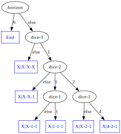

Speed-Up
The advantage of Model-Based learning compared to solutions like Q-Learning is to provide some guarantees on the computed policy. However, the main goal in machine learning is to build coherent policies as fast as possible (and by doing so, to be capable of scaling up).
That for, learning directly the policy is generally preferred in Reinforcement Learning. However, solutions like Q-Learning remains inapplicable in real-life problems, and solutions need to be set up to bypass combinatorial explosions.
Experiments
First we need to set up an environment to save and monitor our progress in learning policies (or models).
One way to do that is to plot the evolution of the strategy during the learning. For instance, the package pyplot provides simple tools in this way.
Let generate a plot with one points every \(500\) games for instance at sleep time.
import matplotlib.pyplot as plt
Class Bot:
def __init__(self):
# Progress
self._results= []
self._evals= []
# Q-Learning attributes
...
def sleep(self, result):
self._results.append(result)
if len(self._results) == 500 :
self._evals.append( sum(self._results)/500.0 )
self._results= []
self.drawEvaluations()
def drawEvaluations(self) :
plt.plot(
[ i*500 for i in range(len(self._evals)) ],
self._evals )
plt.savefig( "output.png" )
plt.clf()
It’s also possible to save the QValues dictionary and the average score in a file for later use, for instance with json package.
fileContent= open("my-file.json", "w")
json.dump( aDictionary, fileContent, sort_keys=True, indent=2 )
fileContent.close()
Then the load function can rebuild a .json dictionary.
if os.path.isfile( "my-file.json" ) :
fileContent= open("my-file.json")
aDictionary = json.load(fileContent)
fileContent.close()
Dynamic Learning Parameters
Greedy exploit/Explore ratio is limited, notably when the Q-values become stables. A first solution is to change the ratio dynamically while the systems record experiments.
Typically, QLearning can be configured with a high exploration probability during the first benches of games, and decrease this probability with experience (i.e. each time the bot is wape-up again). A similar mechanism can be applied to the learning rate.
The parameter of the Qlearning is not directly the Exploration/Explotation ratio and the learning rate, but the initial and final values, and it decreases speed.
Factorized Policy
The main idea is that a same action could be defined for several 'similar' states. So is it possible to group 'similar' states together, to learn faster.
Py421 advantages the combinations 4-2-1, 1-1-1 or X-1-1. A first idea could be to focus state definition to target those combinations.
This idea modeled as a tree will lookalike:

This tree can be implemented with a "if-then-else" procedure into a QLearner Bot, to learn a good behavior on Py421 game only over 7 states. As a result, learning should be very fast but with a final behavior less performant than learning applied over all the 168 game states.
In fact, such a solution is close to Decision Tree approaches, a decision support based on a recursive partitioning structure Wikipedia.